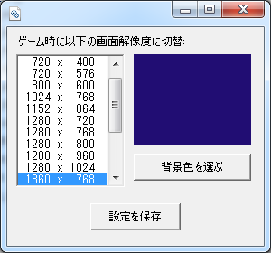

メインゲームの開始時に、PCの画面解像度を自動変更したり、デスクトップを特定の色で塗りつぶすことが出来るModです。
天翔記以外の情報を遮断することで、ゲームへの没入感を高めることが可能となります。
ゲームを終了すると、画面解像度や背景色は元へと戻ります。
SemiFullScreenMod.cpl と SemiFullScreenMod.ini の２つのファイルを「天翔記フォルダ」へとコピー。
編集の仕方には２通りの方法があります。

SemiFullScreenMod.cpl を実行(ダブルクリック等)することで、設定画面が出てきます。
自動切換え解像度と、背景の色を選択し、「設定」を押してください。
設定情報を元に、SemiFullScreenMod.ini が書き換えられます。
SemiFullScreenMod.ini をテキストエディタなどで直接編集することも可能です。
-- 天翔記の「メインゲーム」が始まったら、背景を紺色に、PCの画面解像度を「横1280 縦768」に切り替える場合。
cmd["environment_semi_fullscreen_w"]=1280
cmd["environment_semi_fullscreen_h"]=768
cmd["environment_semi_fullscreen_back_color"]=0x210D73